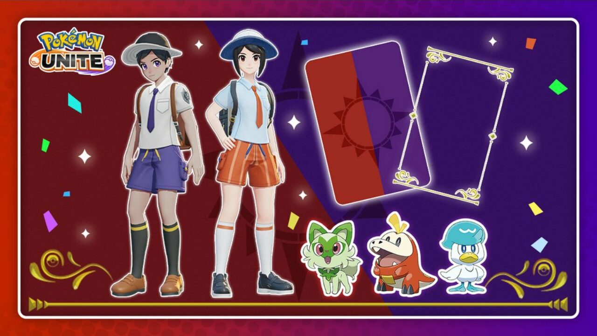
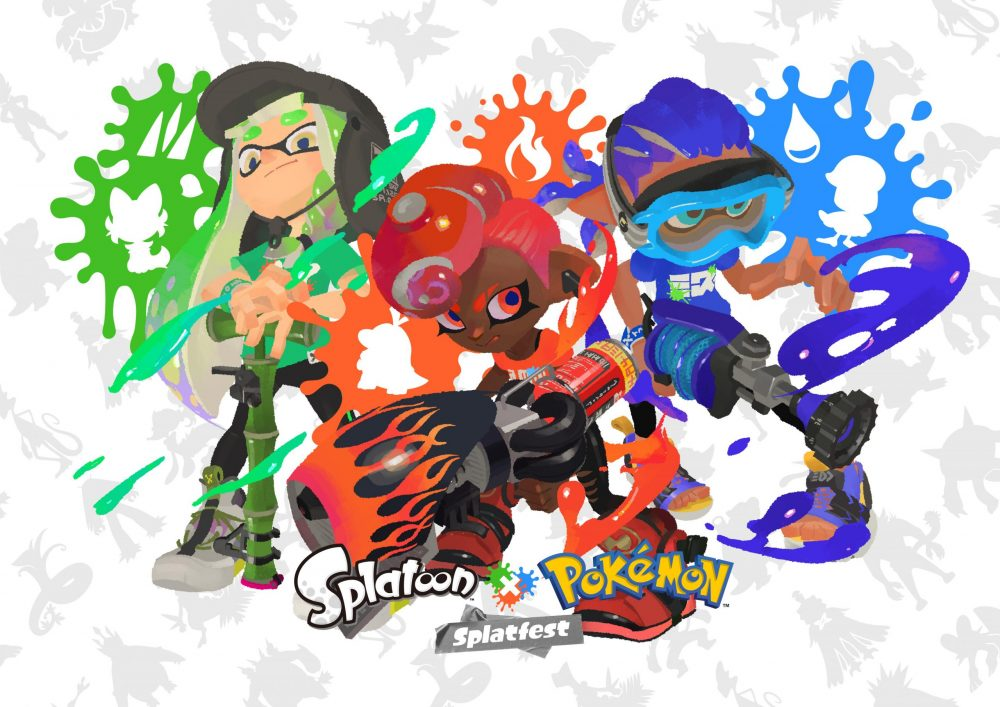

The Pokemon Company has announced a special tie-in between Pokemon Scarlet And Violet and Pokemon Unite. Firstly, when the game launches on November 18th, players will be able to log in to Pokemon Unite to receive backgrounds, frames and stickers based on the new games, including ones featuring the three starter Pokemon. Next, from December 1st, players who own Pokemon Scarlet And Violet will be able to unlock outfits in Pokemon Unite based on the player characters. These items will also be available as part of an event from January 1st till February 1st for players who did not purchase Scarlet or Violet.
The next "Splatoon 3" festival will be a special festival in collaboration with the "Pokémon" series, the " Splatoon x Pokémon Collabo Fest "! This collaboration is in commemoration of the release of the latest title in the series, "Pokémon Scarlet Violet" on November 18, 2022 (Friday), and with both titles having a large number of fans around the world, it is expected to be the most exciting yet.
Official Page